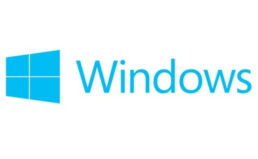

Microsoft Windows (conocido generalmente como Windows), es el nombre de una familia de entornos operativos desarrollados y vendidos por Microsoft. Técnicamente estos no son sistemas operativos, sino que contienen uno (tradicionalmente MS-DOS, o el más actual cuyo núcleo es Windows NT). Microsoft introdujo un entorno operativo denominado Windows el 20 de noviembre de 1985 como un complemento para MS-DOS en respuesta al creciente interés en las interfaces gráficas de usuario (GUI).1 Microsoft Windows llegó a dominar el mercado mundial de computadoras personales, con más del 90% de la cuota de mercado, superando a Mac OS, que había sido introducido en 1984.
Las versiones más recientes de Windows son Windows 8.1 y Windows 8 para equipos de escritorio, Windows Server 2012 para servidores y Windows Phone 8 y 8.1 para dispositivos móviles. La primera versión en español fue Windows 3.0.